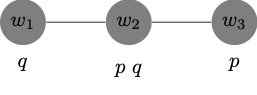

15 Conditionals
Conditional logic and the minimal change framework arise in connection to study the of counterfactual conditionals of the form
- if the match had been struck, then it would have lit.
Robert Stalnaker originally developed the framework in (R. C. Stalnaker 1968Stalnaker, Robert C. 1968. “A Theory of Conditionals.” In Ifs: Conditionals, Belief, Decision, Chance and Time, 41–55. Springer.) to cover indicative conditionals as well.
- if the match is struck, then it will lit.
Both indicative and counterfactual conditionals have been distinguished from material conditionals, which are true if the antecent is false or if the consequent is true. Neither indicative nor counterfactual conditionals appear to be truth-functional. Nor do they appear to share the same truth conditions:
if Shakespeare didn’t write Hamlet, then someone else did.
if Shakespeare hadn’t written Hamlet, then someone else would have.
The Problem of Conditionals
It is not uncommon to use the material conditional to regiment conditionals of the form ‘if the match is struck, it will lit’ as: \(p \to q\). A material conditional of the form \(p \to q\), however, is truth functional: the conditional is true if, and only if, the antecedent \(p\) is false or the consequent \(q\) is true. That means that the material conditional underwrites inferences of the form: \[ \begin{array}{lllll} & \neg \varphi / \varphi \to \psi & & \psi/\varphi \to \psi & \\ \end{array} \] The paradoxes of material implication arise from that observation, since the patterns in question appear suspect when it comes to the indicative conditional in English. It is not clear that we should be entitled to make inferences such as:
- I will not play the lottery.
- Therefore, if I play the lottery, then I will win the jackpot.
Similarly for the inference:
- I will win the jackpot.
- Therefore, if I do not play the lottery, then I will win the jackpot.
More evidence for the apparent mismatch between the material and indicative conditional is not difficult to find. Here is an example due to Dorothy Edgington:
- If God doesn’t exist, then it’s not the case that if I pray, then my prayers will be answered.
- I don’t pray.
- Therefore, God exists.
Unfortunately, the argument turns out to be valid on the material conditional interpretation of the conditionals on which it would be regimented:
- \(\neg p \to \neg (q \to r)\)
- \(\neg q\)
- \(p\)
The material conditional underwrites a variety of further suspect patterns of inference.
\[\tag{Monotonicity} \varphi \to \psi/ (\varphi \wedge \chi) \to \psi \] Here is an example due to William Harper:
- If I put sugar in my coffee, it will taste fine.
- Therefore, if I put sugar and motor oil in my coffee, it will taste fine.
\[\tag{Contraposition} \varphi \to \psi / \neg \psi \to \neg \varphi \]
- If I travel overseas next summer, then it will not be to Europe.
- If I travel to Europe next summer, then it will not be overseas.
\[\tag{Transitivity} \varphi \to \psi, \psi \to \theta / \varphi \to \theta \]
- If a Democrat wins, then a Republican will come a close second.
- If no Republican runs, then a Democrat will win.
- Therefore, if no Republican runs, then a Democrat will come a close second.
Vann McGee has even questioned whether Modus Ponens is valid for the indicative conditional:
\[\tag{Modus Ponens} \varphi \to \psi, \varphi / \psi \] Here is one of his examples:
- If Uncle Otto doesn’t find gold, then if he strikes it rich, then he’ll strike it rich by finding silver.
- Uncle Otto won’t find gold.
- Therefore, if Uncle Otto strikes it rich, then he’ll strike it rich by finding silver.
The Strict Conditional
C.I. Lewis responded to the paradoxes of material implication with a new binary connective, which he called the strict conditional. We are now in a position to represent the strict conditional as the necessitation of the material conditional: \(\Box (p \to q)\).
The strict conditional does not vindicate the two types of inference that played a role in the paradoxes of material implication. We are not allowed to move from \(\neg p\) to \(\Box (p \to q)\) or move from \(q\) to \(\Box (p \to q)\), which suggests progress from the material conditional.
The strict conditional, however, supports perfectly parallel patterns of inference: \[ \begin{array}{lllll} & \Box \neg p / \Box (p \to q) & & \Box q / \Box (p \to q). & \\ \end{array} \] But more importantly for our purposes, the strict conditional supports a variety of patterns of inference we found problematic for the indicative conditional.
\[\tag{Monotonicity} \Box (\varphi \to \psi)/ \Box ((\varphi \wedge \chi) \to \psi) \] \[\tag{Contraposition} \Box (\varphi \to \psi)/ \Box(\neg \psi \to \neg \varphi) \]
\[\tag{Transitivity} \Box(\varphi \to \psi), \Box(\psi \to \theta)/ \Box(\varphi \to \theta) \] That suggests that the strict conditional is still not the best candidate to regiment the indicative conditional. Nor does it help that the behavior of the strict conditional is highly sensitive to the modal framework within which it is embedded: \[ \begin{array}{lllll} & \vdash_{S4} \Box(\varphi \to \psi) / \Box \Box (\varphi \to \psi) & & & \\ & \vdash_{S5} \neg \Box (\varphi \to \psi) / \Box \neg (\varphi \to \psi) & & & \\ \end{array} \]
Conditional Logic
One application of the possible worlds framework is the development of a theory of indicative and counterfactual conditionals due to Robert Stalnaker in (R. C. Stalnaker 1968Stalnaker, Robert C. 1968. “A Theory of Conditionals.” In Ifs: Conditionals, Belief, Decision, Chance and Time, 41–55. Springer.) and a subsequent development due to David Lewis in (Lewis 1973Lewis, David. 1973. Counterfactuals. Cambridge, MA, USA: Blackwell.). The key thought is that we can explain the truth conditions of an indicative conditional in terms of the truth conditions of the material conditional as evaluated in a world that incorporates a minimal departure from the world of evaluation required to render the antecedent true.
An indicative conditional of the form
- if \(p\), then \(q\)
is true at a world \(w\) If, and only if, the material conditional \(p \to q\) is true at a \(p\)-world which otherwise differs minimally from \(w\).
A conditional such as ‘if the match is struck, then it will lit’ is true if, and only if, the corresponding material conditional ‘the match is struck \(\to\) the match will lit’ is true at the closest possible world at which the match is struck. While that conditional strikes us as true, the condtional ‘if I play the lottery, then I will win the jackpot’ strikes us as false; on the minimal change approach, the reason is simple: the closest world at which I play the lottery is presumably one at which I do not win.
To make the proposal more precise, let us introduce the language of conditional logic as an extension of the language propositional logic supplemented with a new binary connective for the new conditional.
Syntax
The primitive vocabulary of the language \(\mathcal{L}\) of conditional logic includes:
- a countable set of propositional variables \(p\), \(q\), \(r\), …
- two monadic sentential operators: \(\neg\) and \(\Box\)
- two binary sentential operators: \(\to\) and \(>\)
- parentheses: \((\), \()\)
We will continue to define other familiar connectives in terms of them.
Definition 15.1 (Well-Formed Formula) We define what is for a string of symbols of the language to be a well-formed formula of \(\mathcal{L}\):
- All propositional variables are well-formed formulas of \(\mathcal{L}\).
- If \(\varphi\) is a well-formed formula of \(\mathcal{L}\), then \(\neg \varphi\) is a well-formed formula of \(\mathcal{L}\).
- If \(\varphi\) and \(\psi\) are well-formed formulas of \(\mathcal{L}\), then \((\varphi \to \psi)\) is a well-formed formulas of \(\mathcal{L}\).
- If \(\varphi\) and \(\psi\) are well-formed formulas of \(\mathcal{L}\), then \((\varphi > \psi)\) is a well-formed formulas of \(\mathcal{L}\).
- If \(\varphi\) is a well-formed formula of \(\mathcal{L}\), then \(\Box \varphi\) is a well-formed formula of \(\mathcal{L}\).
- Nothing else is a well-formed formula of \(\mathcal{L}\).
The set of formulas is constructed inductively from an initial set of atomic formulas. The set \(Form(\mathcal{L})\) of formulas of propositional logic is the \(\subseteq\)-least set, which contains every propositional variable and is closed under applications of negation and conditional.
We read \(\varphi > \psi\) as the indicative conditional ‘if \(\varphi\), then \(\psi\)’, and we read \(\varphi \to \psi\) as the material conditional ‘not-\(\varphi\) or \(\psi\)’. That means that unlike the indicative conditional, the material conditional is truth-functional.
Minimal Change Semantics for Conditional Logic
We will now make precise the minimal change semantics for the new conditional. To simplify discussion, the models will omit the accessibility relation for \(\Box\), which we will implicitely assume to the universal relation on \(W\).
Definition 15.2 (pre-Stalnaker Model) We define a pre-Stalnaker model to be an ordered triple of the form \((W, \{\leq_w : w\in W\}, V)\), where:
\(W\) is a non-empty set of worlds.
\(\{\leq_w: w \in W\}\) is a family of similarity relations for each world in \(W\), where for each \(x, y, w\in W\):
\(x \leq_w y\) is read: \(x\) is at least as similar to \(w\) as \(y\). These similarity relations are reflexive, transitive, strongly connected, and anti-symmetric:
- for all \(w \in W\), \(\leq_w\) is reflexive on \(W\): for all \(x\in W\), \(x \leq_w x\).
- for all \(w \in W\), \(\leq_w\) is transitive on \(W\): for all \(x, y, z\in W\), \(x \leq_w y\), and \(y \leq_w z\), then \(x \leq_w z\).
- for all \(w \in W\), \(\leq_w\) is strongly connected on \(W\): for all \(x, y\in W\), \(x \leq_w y\) or \(y \leq_w x\).
- for all \(w \in W\), \(\leq_w\) is anti-symmetric on \(W\): for all \(x, y \in W\), \(x \leq_w y\) and \(y\leq_w x\), then \(x =y\).
\(V\) is, as usual, a valuation function for \(\mathcal{L}\), which maps each propositional variable to a subset of \(W\).
We provide a recursive definition of truth at a world in a pre-Stalnaker model.
Definition 15.3 (Truth at a World in a pre-Stalnaker Model) We define what is for a formula \(\varphi\) to be true at a world \(w\) in a pre-Stalnaker model \(M\), which we write: \(M, w \Vdash \varphi\): \[ \begin{array}{lll} M, w \Vdash p & \text{iff} & w \in V(p)\\ M, w \Vdash \neg \varphi & \text{iff} & M, w \nVdash \varphi\\ M, w \Vdash (\varphi \to \psi) & \text{iff} & M, w \nVdash \varphi \ \text{or} \ M, w \Vdash \psi\\ M, w \Vdash \Box \varphi & \text{iff} & \text{for every} \ u \in W, \ M, u \Vdash \varphi\\ M, w \Vdash (\varphi > \psi) & \text{iff} & \text{for every} \ u \in W, \text{if} \\ & & \ (M, u\Vdash \varphi \ \text{and for all} \ v \in W, \ M, v\Vdash \varphi, \ \text{then} \ u \leq_w v), \ \text{then} \\ & & \ M, u \Vdash \psi.\\ \end{array} \]
Here is a simpler gloss of the truth conditions for \((\varphi > \psi)\):
- for every \(u \in W\), if \(u\) is the closest-to-\(w\) \(\varphi\)-world, then \(u\) is a \(\psi\)-world.
Notice that \((\varphi > \psi)\) becomes vacuously true at a world \(w\) if there is no closest-to-\(w\) \(\varphi\)-world in the model. That would be the case, for example, if the model contained no \(\varphi\)-worlds at all, or if it contained some \(\varphi\)-worlds but none of them qualified as the closest-to-\(w\) \(\varphi\)-world. In either case, the conditional would be counted as true.
While pre-Stalnaker models have some intrinsic interest, they suffer from what Stalnaker deems a defect: as we mentioned just now, they do not by themselves guarantee the existence of a closest-to-\(w\) \(\varphi\)-world even if we are given the existence of some \(\varphi\)-worlds.
Definition 15.4 (Stalnaker Model) We define a Stalnaker model to be a pre-Stalnaker model of the form \((W, \{\leq_w : w\in W\}, V)\), which satsifies:
The Base Assumption:
For all \(w \in W\), for all \(x \in W\), \(w \leq_w x\).
That is, no world is closer to \(w\) than \(w\) itself.
The Limit Assumption:
For all \(w \in W\), if \(M, w \Vdash \Diamond \varphi\), then for some \(u \in W\),
- \(M, u \Vdash \varphi\), and
- For all \(v\in W\), if \(M, v \Vdash \varphi\), then \(u \leq_w v\).
That is, if \(\varphi\) is possible at \(w\), then there is a closest-to-\(w\) \(\varphi\)-world.
We are in a position to define truth and validity:
Definition 15.5 (Truth is a Stalnaker Model) A formula \(\varphi\) is true in a Stalnaker model \(M\), written: \(M \Vdash \varphi\), if, and only if for every \(w \in W\), \(M, w \Vdash \varphi\).
Definition 15.6 (Validity) A formula \(\varphi\) is valid, written: \(\models \varphi\), if, and only if \(\varphi\) is true in every Stalnaker model.
In order to become more familiar with these definitions, it will be helpful to provide illustrations of the contrast between valid and invalid formulas of the language of conditional logic.
We begin with some examples of validity.
Example 15.1 \(\models (p \wedge q) \to (p >q)\).
That is, \((p \wedge q) \to (p >q)\) is true in every Stalnaker model. For let \(M = ( W, \{\leq_w: w\in W\}, V )\) be a Stalnaker model and let \(w \in W\). We now argue that \(M, w \Vdash p >q\) provided that \(M, w \Vdash p \wedge q\). To evaluate \(p >q\) at \(w\), we note that given the Base Assumption, since \(M, w \Vdash p\), \(w\) is the closest-to-\(w\) \(p\)-world. Since, by assumption, \(M, w \Vdash q\), we conclude that the closest-to-\(w\) \(p\)-world is a \(q\)-world, which means that \(M, w \Vdash p >q\).
Example 15.2 \(\models (p > q) \wedge (p \wedge q > r) \to (p > r)\).
That is, \((p > q) \wedge (p \wedge q > r) \to (p > r)\) is true in every Stalnaker model. For let \(M = ( W, \{\leq_w: w\in W\}, V )\) be a Stalnaker model and let \(w \in W\). We now argue that \(M, w \Vdash p >r\) provided that \(M, w \Vdash p > q\) and \(M, w \Vdash p \wedge q > r\). To evaluate \(p >r\) at \(w\), we should distinguish two cases:
There are no \(p\)-worlds in \(W\) in which case \(p > r\) will be vacuously true at \(w\) in \(M\).
There are some \(p\)-worlds in \(W\) in which case, by the Limit Assumption, there is such thing as the closest-to-\(w\) \(p\)-world, which we call \(u\). From the fact that \(M, w \Vdash p >q\), we know that \(u\) is a \(q\)-world. Since the closest-to-\(w\) \(p\)-world, namely, \(u\), is a \(q\)-world, \(u\) itself must the be the closest-to-\(w\) \(p\wedge q\)-world. From \(M, w \Vdash p \wedge q >r\), we now infer that \(u\) is an \(r\)-world. Therefore, since the closest-t-\(w\) \(p\)-world is an \(r\)-world, we conclude \(M, w \Vdash p >r\).
Example 15.3 \(\models \Box (p > q) \to (p > q)\).
That is, \(\Box (p > q) \to (p > q)\) is true in every Stalnaker model. For let \(M = ( W, \{\leq_w: w\in W\}, V )\) be a Stalnaker model and let \(w \in W\). We now argue that \(M, w \Vdash p >q\) provided that \(M, w \Vdash p > q\) and \(M, w \Vdash \Box (p >q)\). To evaluate \(p >q\) at \(w\), we should distinguish two cases:
There are no \(p\)-worlds in \(W\) in which case \(p > q\) will be vacuously true at \(w\) in \(M\).
There are some \(p\)-worlds in \(W\) in which case, by the Limit Assumption, there is such thing as the closest-to-\(w\) \(p\)-world, which we call \(u\). From the fact that \(M, w \Vdash \Box (p \to q)\), we know that \(u\) is a \(q\)-world. Since the closest-to-\(w\) \(p\)-world, namely, \(u\), is a \(q\)-world, we conclude \(M, w \Vdash p > q\).
We now illustrate a series of important differences between the new conditional and the material conditional.
Example 15.4 \(\not \models (p > q) \to (p \wedge r > q)\).
We describe a Stalnaker model in which the material conditional fails at at least one world. For let \(M = (W, \{\leq_w: w\in W\}, V)\) be such that
- \(W = \{w_1, w_2, w_3\}\)
- \(\leq_{w_1}\) is such that
- \(w_1 \leq_{w_{1}} w_1\),
- \(w_1 \leq_{w_{1}} w_2\),
- \(w_2 \leq_{w_{1}} w_2\),
- \(w_2 \leq_{w_{1}} w_3\), and
- \(w_3 \leq_{w_{1}} w_3\)
- \(V\) is a valuation function such that
- \(V(p) = \{w_2, w_3\}\),
- \(V(q) = \{w_2\}\), and
- \(V(r) = \{w_3\}\).
Here is a diagrammatic representation of the model and the relation of similarity to \(w_1\): \(\leq_{w_{1}}\).

Now:
\(M, w_1 \Vdash p > q\) because the closest-to-\(w_1\) \(p\)-world is \(w_2\), which is a \(q\)-world.
\(M, w_1 \nVdash p \wedge r > q\) because the closest-to-\(w_1\) \(p\wedge r\)-world is \(w_3\), which is not a \(q\)-world.
Example 15.5 \(\not \models (p > q) \to (\neg q > \neg p)\).
We describe a Stalnaker model in which the material conditional fails at at least one world. For let \(M = (W, \{\leq_w: w\in W\}, V)\) be such that
- \(W = \{w_1, w_2, w_3\}\)
- \(\leq_{w_1}\) is such that
- \(w_1 \leq_{w_{1}} w_1\),
- \(w_1 \leq_{w_{1}} w_2\),
- \(w_2 \leq_{w_{1}} w_2\),
- \(w_2 \leq_{w_{1}} w_3\), and
- \(w_3 \leq_{w_{1}} w_3\)
- \(V\) is a valuation function such that
- \(V(p) = \{w_2, w_3\}\), and
- \(V(q) = \{w_2\}\).
Here is a diagrammatic representation of the model and the relation of similarity to \(w_1\): \(\leq_{w_{1}}\).

Now:
\(M, w_1 \Vdash p > q\) because the closest-to-\(w_1\) \(p\)-world is \(w_2\), which is a \(q\)-world.
\(M, w_1 \nVdash \neg q > \neg p\) because the closest-to-\(w_1\) \(\neg q\)-world is \(w_3\), which is not a \(\neg p\)-world.
Example 15.6 \(\not \models (p > q) \wedge (q > r)\to (p > r)\).
We describe a Stalnaker model in which the material conditional fails at at least one world. For let \(M = (W, \{\leq_w: w\in W\}, V)\) be such that
- \(W = \{w_1, w_2, w_3\}\)
- \(\leq_{w_1}\) is such that
- \(w_1 \leq_{w_{1}} w_1\),
- \(w_1 \leq_{w_{1}} w_2\),
- \(w_2 \leq_{w_{1}} w_2\),
- \(w_2 \leq_{w_{1}} w_3\), and
- \(w_3 \leq_{w_{1}} w_3\)
- \(V\) is a valuation function such that
- \(V(p) = \{w_3\}\),
- \(V(q) = \{w_2, w_3\}\), and
- \(V(r) = \{w_2\}\).
Here is a diagrammatic representation of the model and the relation of similarity to \(w_1\): \(\leq_{w_{1}}\).

Now:
\(M, w_1 \Vdash p > q\) because the closest-to-\(w_1\) \(p\)-world is \(w_3\), which is a \(q\)-world.
\(M, w_1 \Vdash q > r\) because the closest-to-\(w_1\) \(q\)-world is \(w_2\), which is a \(r\)-world.
\(M, w_1 \nVdash p > r\) because the closest-to-\(w_1\) \(p\)-world is \(w_3\), which is not an \(r\)-world.
Sphere Models for Counterfactuals
David Lewis proposed an alternative model theory for the logic counterfactual conditionals in (Lewis 1973Lewis, David. 1973. Counterfactuals. Cambridge, MA, USA: Blackwell.). He embraced the minimal change approach to conditional logic but he objected to the use of Stalnaker models for a logic of counterfactual conditionals.
Similarity may not be anti-symmetric: two worlds may sometimes be tied for similarity to the world of evaluation. In those cases, each world is at least as similar to the world of evaluation as the other, yet they remain distinct.
We should allow for failures of the Limit Assumption to accommodate infinite descending chains of similarity.
We should look at each objection in turn.
Against Anti-Symmetry
If similarity is an anti-symmetric relation, we should be able to validate each of the following principles:
\[\tag{Conditional Excluded Middle} (\varphi > \psi) \vee (\varphi > \neg \psi) \] For example:
- Either if I toss the coin, then it will land heads or if I toss the coin, it will not land heads.
Proposition 15.1 \(\models (\varphi > \psi) \vee (\varphi > \neg \psi)\).
Proof. That is, \((\varphi > \psi) \vee (\varphi > \neg \psi)\) is true in every Stalnaker model. For let \(M = ( W, \{\leq_w: w\in W\}, V )\) be a Stalnaker model and let \(w \in W\). We now argue that \(M, w \Vdash \varphi > \neg \psi\) if \(M, w \nVdash \varphi > \psi)\). To evaluate \(\varphi > \neg \psi\) at \(w\), we should distinguish two cases:
There are no \(\varphi\)-worlds in \(W\) in which case \(\varphi > \neg \psi\) will be vacuously true at \(w\) in \(M\).
There are some \(\varphi\)-worlds in \(W\) in which case, by the Limit Assumption, there is such thing as the closest-to-\(w\) \(\varphi\)-world, which we call \(u\). From the fact that \(M, w \nVdash \varphi > \psi\), we deduce that \(u\) is not a \(\psi\)-world. Since the closest-to-\(w\) \(\varphi\)-world, namely, \(u\), is a \(\neg \psi\)-world, we conclude \(M, w \Vdash \varphi > \neg \psi\).
\[\tag{Distribution} (\varphi > (\psi \vee \theta)) \to ((\varphi > \psi) \vee (\varphi > \theta)) \]
We are in a position to move from the first to the second counterfactual conditional:
if I toss coin, then it will land heads or tails
Either if I toss the coin, then it will land heads or if I toss the coin, then it will land tails.
Proposition 15.2 \(\models (\varphi > (\psi \vee \theta)) \to ((\varphi > \psi) \vee (\varphi \ > \theta))\).
Proof. That is, \((\varphi > (\psi \vee \theta)) \to ((\varphi > \psi) \vee (\varphi > \theta))\) is true in every Stalnaker model. For let \(M = ( W, \{\leq_w: w\in W\}, V )\) be a Stalnaker model and let \(w \in W\). We now argue that \(M, w \Vdash \varphi > \theta\) if \(M, w \Vdash \varphi > (\psi \vee \theta)\) and \(M, w \nVdash \varphi > \psi)\). To evaluate \(\varphi > \neg \psi\) at \(w\), we should distinguish two cases:
There are no \(\varphi\)-worlds in \(W\) in which case \(\varphi > \neg \theta\) will be vacuously true at \(w\) in \(M\).
There are some \(\varphi\)-worlds in \(W\) in which case, by the Limit Assumption, there is such thing as the closest-to-\(w\) \(\varphi\)-world, which we call \(u\). From the fact that \(M, w \Vdash \varphi > (\psi \vee \theta)\), we deduce that \(u\) is a \((\psi \vee \theta)\)-world. Yet, from the fact that \(M, w \nVdash \varphi > \psi)\), we have that \(u\) is not a \(\psi\)-world, which means it it a \(\theta\)-world. Since the closest-to-\(w\) \(\varphi\)-world, namely, \(u\), is a \(\theta\)-world, we conclude \(M, w \Vdash \varphi > \theta\).
(Lewis 1973Lewis, David. 1973. Counterfactuals. Cambridge, MA, USA: Blackwell.) thought these principles are patently false for counterfactual conditionals.
Example 15.7 (Counterexample to Excluded Middle) According to Lewis, we should accept the negation of certain instances of Conditional Excluded Middle for counterfactuals:
- It is neither the case that if Bizet and Verdi had been compatriots, then they would have both been French nor that if they had been compatriots, then they would have not both been French.
Even Conditional Excluded Middle is false, we may be inclined to accept:
- If Bizet and Verdi had been compatriots, then they might have both been French and if Bizet and Verdi had been compatriots, then they might have not both been French.
Example 15.8 (Counterexample to Distribution) According to Lewis, Distribution is subject to a similar problem. On the one hand:
- If Bizet and Verdi had been compatriots, then they would have both been French or they would have both been Italian.
Yet:
- It is neither the case that if Bizet and Verdi had been compatriots, then they would have both been French nor that if they had been compatriots, then they would have both been Italian.
Even Distribution is false, we may be inclined to accept:
- If Bizet and Verdi had been compatriots, then they might have both been French and if Bizet and Verdi had been compatriots, then they might have both been Italian.
Against the Limit Assumption
The Limit Assumption rules out pre-Stalnaker models in which a formula \(\varphi\) is not true at the world of evaluation \(w\), yet it is true at each world occurring in an infinite descending chain of similarity \((u_n: n\in \mathbb{N})\) where for each \(n\), \(u_{n+1} \leq_w u_{n}\). That is, for each \(\varphi\) world in the model, there is a strictly closer-to-\(w\) \(\varphi\)-world.
Example 15.9 (Counterexample to the Limit Assumption) According to Lewis, the Limit Assumption is not an adequate constraint for the evaluation of counterfactuals such as:
If I had been over 6ft tall, my height would have remained below 7ft.
I I had been over 6ft tall, my height would have surpassed 7ft.
One counterfactual strikes us as true whereas the other strikes us a false. There is, on the face of it, no closest world at which I’m over 6ft tall, which means that the Limit Assumption would seem to fail when it comes to similarity to the actual world.
Notice that it is no solution to this problem to fall back to pre-Stalnaker models, since they would vacuously verify both counterfactuals.
Sphere Models
We focus on a formulation of Conditional Logic in which \(>\) is replaced by \(\Box \! \! \to\), which is meant to regiment the counterfactuol conditional. (Lewis 1973Lewis, David. 1973. Counterfactuals. Cambridge, MA, USA: Blackwell.) refines the thought that the truth conditions of the counterfactual \(p \ \Box \!\! \to q\) should be explained in terms of the truth conditions of the material conditional \(p \to q\) at \(p\)-worlds that are otherwise minimally different from the world of evaluation.
A counterfactual conditional of the form
- if \(p\) had been the case, then \(q\) would have been the case.
is true at a world \(w\) If, and only if, no \(p\)-and-\(\neg q\)-world is closer to \(w\) than a \(p\)-and-\(q\)-world. That is, not world at which \(p \to q\) fails is closer to \(w\) than a \(p \to q\)-world.
A counterfactual conditional such as ‘if the match had been struck, then it would have lit’ is true if, and only if, no world in which the material conditional ‘the match is struck \(\to\) the match will lit’ fails is closer to the actual world than a world at which the conditional obtains.
To make the proposal precise, (Lewis 1973Lewis, David. 1973. Counterfactuals. Cambridge, MA, USA: Blackwell.) makes use of spheres of similarity: there is, for each world, a nested system of spheres centered on the world of evaluation, which provide a formal representation of the spheres of similarity for that world. Each sphere includes worlds, which are tied to each other with respect to similarity to the world of evaluation, which is placed at the center of the system of spheres. The main constraint is that the closer a world is to the world of evaluation, the closer the sphere of similarity to which it belongs is to the center.
Example 15.10 Consider the sphere model represented by the diagram:
The diagram represents the fact that \(w_1\) is closer to \(w\) than \(w_2\) by placing \(w_1\) and \(w_2\) in different spheres of similarity and by making sure \(w_1\) lies in the sphere closer to the center. The minimal departures of \(w\) in which \(p\) is true are worlds that lie in the innermost sphere where \(p\) is satisfied, which is the shaded area in the diagram.
We will declare \(p \ \Box \! \! \to q\) to be true at \(w\) If, and only if, \(q\) is true at \(p\)-worlds that are minimally different from \(w\), e.g., \(w_2\).
For a more formal treatment of sphere models, consider the definition:
Example 15.11 A sphere model is an ordered triple \((W, O, V)\), where:
\(W\) is a non-empty set of worlds.
\(O\) is a function from \(W\) into a system of spheres \(O_w\), which is a set of sets of possible worlds in \(W\) for which:
- for all \(w \in W\), \(O_w\) is centered on \(w\): \(\{w\} \in O_w\).
- for all \(w \in W\), \(O_w\) is nested: for all \(X, Y\in O_w\), \(X \subseteq Y\) or \(Y \subseteq X\).
- for all \(w \in W\), \(O_w\) is closed under union.
- for all \(w \in W\), \(O_w\) is closed under non-empty intersection.
\(V\) is, as usual, a valuation function for \(\mathcal{L}\), which maps each propositional variable to a subset of \(W\).
The worlds in a system of spheres \(O_w\) centered on \(w\) are stratified into spheres or layers according to their distance with respect to the world of evaluation. The innermost sphere or layer \(\{w\}\) contains \(w\), which is the closest world to \(w\). And if \(X \subset Y\), then the worlds in \(X\) are strictly closer to the world of evaluation \(w\) than the worlds in \(Y \setminus X\).
Example 15.12 A partial specification of a sphere models will generally include the system of spheres generated by the relation of similarity to the world of evaluation.
- \(W = \{w, w_1, w_2, w_3, w_4, w_5, w_6\}\)
- \(O_w = \{S_1, S_2, S_3\}\), where:
- \(S_1 = \{w\}\)
- \(S_2 = \{w, w_1, w_2, w_3\}\)
- \(S_3 = \{w, w_1, w_2, w_3, w_4, w_5, w_6\}\)
- \(V(p) = \{w_5, w_6\}\)
For a diagrammatic specification, consider:
We now define what is for a formula to be true at a world in a sphere model.
Definition 15.7 (Truth at a World in a Sphere Model) We define what is for a formula \(\varphi\) to be true at a world \(w\) in a sphere model \(M\), which we write: \(M, w \Vdash \varphi\): \[ \begin{array}{lll} M, w \Vdash p & \text{iff} & w \in V(p)\\ M, w \Vdash \neg \varphi & \text{iff} & M, w \nVdash \varphi\\ M, w \Vdash (\varphi \to \psi) & \text{iff} & M, w \nVdash \varphi \ \text{or} \ M, w \Vdash \psi\\ M, w \Vdash \Box \varphi & \text{iff} & \text{for every} \ u \in W, \ M, u \Vdash \varphi\\ M, w \Vdash (\varphi \ \Box \!\! \to \psi) & \text{iff} & \text{for every} \ u \in W, M, u \nVdash \varphi, \text{or} \\ & & \ \text{for some} \ S \in O_w \ , \text{for some} \ u \in S, \ M, u\Vdash \varphi, \ \text{and}\\ & & \text{for all} \ v \in S, \ M, v \Vdash \varphi \to \psi.\\ \end{array} \]
For a simpler gloss of the truth conditions of \((\varphi \ \Box \!\! \to \psi)\), call a sphere \(S\) a \(\varphi\)-sphere if \(S\) contains at least one \(\varphi\)-world. Then, \((\varphi \ \Box \!\! \to \psi)\) is true at \(w\) if, and only if either no world is a \(\varphi\)-world or else there is a \(\varphi\)-sphere whose members are all \(\varphi \to \psi\)-worlds.
Definition 15.8 (Truth at a World in a Sphere Model) There are no \(\varphi\)-spheres centered on \(w\) or else some \(\varphi\)-sphere consists exclusively of \((\varphi \to \psi)\)-worlds.
Notice that \((\varphi \ \Box \!\! \to \psi)\) is vacuously true at a world if \(\varphi\) is impossible. So, counterfactuals with impossible antecendents, or counterpossibles for short, come out as vacuously true in every world of every sphere model.
We are in a position to define truth and validity:
Definition 15.9 (Truth is a Sphere Model) A formula \(\varphi\) is true in a sphere model \(M\), written: \(M \Vdash \varphi\), if, and only if for every \(w \in W\), \(M, w \Vdash \varphi\).
Definition 15.10 (Validity) A formula \(\varphi\) is valid, written: \(\models \varphi\), if, and only if \(\varphi\) is true in every sphere model.
In order to become more familiar with these definitions, it will be helpful to provide illustrations of the contrast between valid and invalid formulas of the language of conditional logic.
We begin with some examples of validity.
Example 15.13 \(\models (p \wedge q) \to (p \ \Box \!\! \to q)\).
That is, \((p \wedge q) \to (p >q)\) is true in every sphere model. For let \(M = ( W, O, V )\) be a sphere model and let \(w \in W\). We now argue that \(M, w \Vdash p \ \Box \!\! \to q\) provided that \(M, w \Vdash p \wedge q\). To evaluate \(p \ \Box \!\! \to q\) at \(w\), we note that since \(M, w \Vdash p\), \(\{w\}\) is a \(p\)-sphere centered on \(w\), and since \(M, w \Vdash q\), \(\{w\}\) is a \(p\)-sphere composed exclusively of \(p \to q\)-worlds.
We now illustrate a series of important differences between Lewis’ counterfactual conditional and the material conditional.
Example 15.14 \(\not \models (p \ \Box \! \! \to q) \to (\neg q \ \Box \! \! \to \neg p)\).
We describe a sphere model in which the material conditional fails at at least one world. For let \(M = (W, O, V)\) be such that
- \(W = \{w, w_1, w_2\}\)
- \(O{w} = \{\{w\}, \{w, w_1\}, \{w, w_1, w_2\}\}\)
- \(V\) is a valuation function such that
- \(V(p) = \{w_1, w_2\}\), and
- \(V(q) = \{w, w_1\}\).
Here is a diagrammatic representation of the model and the system of spheres for \(w\).
 Now:
Now:
\(M, w \Vdash p \ \Box \!\! \to q\) because \(\{w, w_1\}\) is a \(p\)-sphere all of whose worlds are \(p \to q\)-worlds.
\(M, w \nVdash \neg q \ \Box \!\! \to \neg p\) because there is just one \(\neg q\)-sphere, \(\{w, w_1, w_2\}\), and some worlds in that sphere are not \(\neg q \to \neg p\)-worlds, e.g., \(w_2\).
Example 15.15 \(\not \models (p \ \Box \!\! \to q) \to (p \wedge r \ \Box \!\! \to q)\).
We describe a sphere model in which the material conditional fails at at least one world. For let \(M = (W, O, V)\) be such that
- \(W = \{w, w_1, w_2\}\)
- \(O{w} = \{\{w\}, \{w, w_1\}, \{w, w_1, w_2\}\}\)
- \(V\) is a valuation function such that
- \(V(p) = \{w_1, w_2\}\),
- \(V(q) = \{w_1\}\), and
- \(V(r) = \{w_2\}\).
Here is a diagrammatic representation of the model and the system of spheres for \(w\).

Now:
\(M, w \Vdash p \ \Box \!\! \to q\) because \(\{w, w_1\}\) is a \(p\)-sphere all of whose worlds are \(p \to q\)-worlds.
\(M, w \nVdash p \wedge r \ \Box \!\! \to q\) because there is just one \(p \wedge r\)-sphere, \(\{w, w_1, w_2\}\), and some worlds in that sphere are not \(p \wedge r \to q\)-worlds, e.g., \(w_2\).
Before we proceed, however, we should say a word by way of motivation. One reason to extend the language of quantificational logic with a modal operator is the gain in expressive resources that results.
Example 15.16 (de Re/de Dicto) There are at least two interpretations of the English sentence:
- Someone rich could have been poor.
On the one hand, there is a de dicto interpretation on which we qualify the proposition that somone rich is poor:
1a. Possibly, someone rich is poor.
On the other hand, there is a de re interpretation, which qualifies the way in which some individual person is rich:
1b. Someone who is rich is possibly poor.
Quantificational modal logic allows one to capture that distinction:
\[ \begin{array}{lll} 1a & \Diamond \exists x (Rx \wedge Px) & \text{(de dicto)} \\ 1b & \exists x (Cx \wedge \Diamond Px) & \text{(de re)} \\ \end{array} \]
This distinctions help dispel what might otherwise be thought to be difficult puzzles on the interaction between predication and modality.
Example 15.17 (Quine's Mathematical Cyclist) W. V. Quine raises a concern in (Quine 1964Quine, Willard Van Orman. 1964. Word and Object. MIT press.):
Perhaps I can evoke the appropriate sense of bewilderment as follows. Mathematicians may conceivably be said to be necessarily rational and not necessarily two-legged; and cyclists necessarily two-legged and not necessarily rational. But what of an individual who counts among his eccentricities both mathematics and cycling? Is this concrete individual necessarily rational and contingently two-legged or vice versa? Just insofar as we are talking referentially of the object, with no special bias towards a background grouping of mathematicians as against cyclists or vice versa, there is no semblance of sense in rating some of his attributes as necessary and others as contingent. Some of his attributes count as important and others as unimportant, yes, some as enduring and others as fleeting; but none as necessary or contingent.
There is a crucial distinction between a de dicto and a de re interpretation of Quine’s claims that cyclists are necessarily two-legged and that cyclists are not necessarily rational.
- Cyclists are necessarily two-legged
\[ \begin{array}{lll} 1a & \Box \forall x (Cx \to Tx) & \text{(de dicto)} \\ 1b & \forall x (Cx \to \Box Tx) & \text{(de re)} \\ \end{array} \] 2. Cyclists are not necessarily rational \[ \begin{array}{lll} 2a & \neg \forall x (Cx \to \Box Rx) & \\ 2b & \forall x (Cx \to \neg \Box Rx) & \\ 2c & \neg \Box \forall x (Cx \to Rx) & \\ \end{array} \] There is no special problem once we realize that 1a and 2c are perfectly reasonable interpretations of Quine’s claims.
What Quine’s objection brings out is the fact that quantified modal logic is a suitable framework for a common distinction between essential and accidental attributes.
Example 15.18 (Essence and Accident) One common distinction between a statue made of clay and the portion of clay of which it is made is that while they exemplify a certain shape, the shape is an essential attribute of the statue and an accidental attribute of the clay of which it is made. One way to articulate the distinction makes use of de re modality:
\(Sc \wedge \neg \Box Sc\)
\(\Box Ss\)
This provisional characterization of a distinction between essential and accidental attributes in modal terms is not well-suited to accommodate the contingent existence of the statue and the clay, but we will eventually consider the question of how to do better.
W. V. O. Quine had a more serious objection to the very intelligibility of quantified modal logic. His objection is premised on a certain interpretation of the modality involved in the language of quantified modal logic. Like Carnap and others before him, he took the modality to be linguistic at heart. To claim that necessarily, all bachelors are unmarried is to assert, on their view, that the sentence ‘all bachelors are unmarried’ is analytic or true in virtue of the meaning of the terms involved. What else, they may add, could the necessity involved be?
That interpretation is ill-suited to make sense of quantified modal logic. For compare the truth conditions of the two sentences below:
\(\Box \exists x Fx\)
For Quine, this sentence is true if, and only if, the sentence \(\exists x Fx\) is analytic.
\(\exists x \Box Fx\)
This sentence is true if, and only if, the open formula \(\Box Fx\) is true relative to an assignment of an object to the individual variable \(x\). If \(\Box Fx\) is true relative to an assignment if, and only if, \(Fx\) is analytic relative to that assignment. But what could that mean? Closed sentences may be true or not in virtue of the meaning of the terms involved, but it is difficult to make sense of the truth of an open formula in virtue of the meaning of the terms involved, much less the truth of an open formula relative to an assignment.